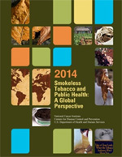

Activities and Resources
China - U.S. Smokefree Workplace Initiative
On September 7, 2012, The United States and China launched the China-U.S. Smokefree Workplace Initiative (CUSW). CUSW is a public-private partnership that aims to support companies in implementing smoke and tobacco free worksites throughout China. To date over 285 companies covering 500,000 employees have joined the CUSW network. NCI provides technical assistance to CUSW, including participating in training workshops, developing training materials, and providing guidance on smoking cessation tools and resources. Materials from CUSW in Chinese can be accessed here.

mHeath Initiatives
Tobacco Control Research Branch scientists provide technical assistance to the World Health Organizations’s (WHO) mHealth and eHealth initiatives and are currently working with WHO and the International Telecommunications Union (ITU) on the development of Planning Implementation Documents for mHealth interventions across multiple behavioral risk factors associated with noncommunicable diseases. TCRB has also worked with Emory University and other partners to conduct three intervention studies in China using SMS messaging programs to deliver health education information and smoking cessation treatment.
WHO Study Group on Tobacco Product Regulation (TobReg)
TobReg’s objective is to advise the World Health Organizations about scientifically sound recommendations to Member States addressing the most effective and evidence-based means in order to fill regulatory gaps in tobacco control and achieve a coordinated regulatory framework for tobacco products. NCI staff participates in TobReg through committee membership and as subject experts.

(Images, courtesy of Mark Parascandola)
WHO Tobacco Laboratory Network (TobLabNet)
TobLabNet is a global tobacco testing laboratory network. Its function is combining testing and research at the global level as an approach to match the tobacco industry’s expert product testing capabilities. NCI scientists have participated in the development of standard protocols for laboratory testing of tobacco products.
World Conference on Tobacco or Health (WCTOH)
NCI has provided support for the 2015 World Conference on Tobacco or Health - the world’s largest gathering of tobacco control advocates, policy makers, researchers, public health and clinical experts. The theme of the 2015 conference, “Tobacco and Non-Communicable Diseases,” highlights the fact that tobacco use is a leading risk factor for diseases causing millions of deaths every year, contributing to the enormous burden of non-communicable diseases globally.
NCI Resources


- Smokeless Tobacco and Public Health: A Global Report
- NCI Tobacco Control Monograph Series
- The Role of the Media in Promoting and Reducing Tobacco Use
- Executive Summary (PDF)
- Spanish (PDF)
- Arabic (PDF)
- Chinese (PDF)
- French (PDF)
- Portuguese (PDF)
- Russian (PDF)
Espanol.smokefree.gov
Smokefree Español (espanol.smokefree.gov) launched in 2012 as a Spanish language resource aimed at Hispanic Americans who want to quit smoking. Smokefree Español has a presence on Twitter, YouTube, and Pinterest. Spanish language messaging is provided on these social media platforms to keep users connected to information about the health effects of smoking, the benefits of quitting, and other ways to improve their health. In addition, SmokefreeTXT en Español offers 24/7 support for those who want to quit smoking with the help of text messages in Spanish.
NCI Center for Global Health
The National Cancer Institute (NCI) established the Center for Global Health (CGH) in 2011 to help reduce the global burden of cancer. CGH develops initiatives and collaborates with other NCI divisions, NCI-designated cancer centers, and countries to support cancer control planning build capacity, and support cancer research and cancer research networks in low- and middle-income countries (LMICs).
Other Resources
WHO Smoking and Pregnancy Guidelines (available in English and Russian)
Exposure to tobacco smoke affects all stages of human reproduction. Tobacco use and secondhand smoke exposure during pregnancy have detrimental health effects on women and their infants. The goal of these guidelines is to reduce the prevalence of tobacco use and secondhand smoke exposure in pregnant women by providing evidence-based recommendations to health care providers, as well as other health service providers. This document is the result of collaboration between the PND/WHO and a large number of international agencies and organizations active in the field of tobacco and reproductive health. Support for this project was provided by the Government of the United States of America through the U.S. Centers for Disease Control and Prevention (CDC) and the U.S. National Cancer Institute (NCI).
International Agency for Research on Cancer (IARC) Tobacco Control Monographs and Handbooks
The International Agency for Research on Cancer (IARC) is a specialized cancer agency of the World Health Organization working in promoting and enhancing international and inter-disciplinary collaboration in cancer research. The Agency has a particular interest in conducting research in LMICs through partnerships and collaborations with researchers in these regions. IARC produces multiple tobacco-related publications.
- IARC Handbooks of Cancer Prevention
- IARC Monographs on the Evaluation of Carcinogenic Risks to Humans
- NIH Fogarty International Center
- CDC Global Tobacco Prevention and Control
- CDC Global Tobacco Surveillance System
- HHS Office of Global Affairs